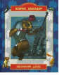

Стихи классика детской литературы - Бориса Владимировича Заходера - вызывают улыбку и одновременно заставляют задуматься. В этой прекрасно проиллюстрированной книге собраны любимые детьми стихи - "Звонкий день", "Кит и Кот", "Строители", "Кискино горе" и многие другие. Смешные ситуации, волшебные образы непременно порадуют вашего ребенка и запомнятся на всю жизнь.